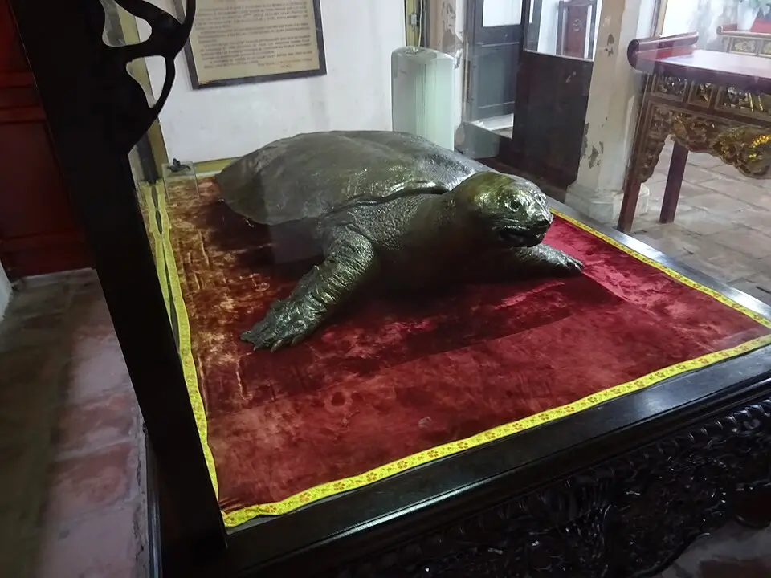

Lê Lợi trả gươm cho Rùa Vàng: sử hay huyền thoại?
Theo Lam Sơn thực lục, lưỡi gươm của Lê Lợi được kéo lên trong một mẻ lưới không có con cá nào. Còn con rùa đòi gươm trên hồ Tả Vọng thì đến từ truyền thuyết kể về sau.
Ở vực Ma Viện, một người quăng chài tên Lê Thận thấy đáy nước sáng như có bó đuốc. Ông quăng chài suốt đêm mà không được con cá nào, chỉ kéo lên một mảnh sắt dài hơn một thước. Ông mang về để vào chỗ tối. Theo Lam Sơn thực lục, đó là khởi đầu của thanh gươm gắn với tên hồ nổi tiếng nhất Hà Nội. Câu chuyện đáng đọc vì nó cho thấy rõ chỗ sử sách dừng lại và chỗ truyền thuyết bắt đầu.
Sách còn chép rằng hôm sau, hoàng hậu ra vườn cải thấy bốn vết chân người rất lớn, và nhặt được một quả ấn báu cũng có chữ "Thuận Thiên" và chữ "Lợi".
Gươm từ đâu ra
Lam Sơn thực lục, sách được cho là của Nguyễn Trãi, kể tiếp: một hôm Lê Thận làm giỗ, Lê Lợi đến chơi, thấy ánh sáng phát ra từ góc tối và xin lấy mảnh sắt. Đánh sạch rỉ, ông thấy trên đó có chữ "Thuận Thiên" và chữ "Lợi". Lần khác, ông thấy ngoài cửa một chuôi gươm đã mài giũa thành hình. Ông khấn trời rồi lắp thử, lưỡi và chuôi vừa khớp.
Sách còn chép rằng hôm sau, hoàng hậu ra vườn cải thấy bốn vết chân người rất lớn, và nhặt được một quả ấn báu cũng có chữ "Thuận Thiên" và chữ "Lợi". Lê Lợi coi đó là của trời cho và giữ kín. Theo Wikipedia tiếng Việt, bản truyện đưa vào sách giáo khoa về sau được viết tiếp, thêm phần kết có con rùa.
Mười năm Lam Sơn

Phần lịch sử thì rõ ràng hơn. Ngày mồng 2 tháng Giêng năm Mậu Tuất, tức năm 1418, Lê Lợi dựng cờ khởi nghĩa ở Lam Sơn, Thanh Hóa, với lực lượng ban đầu chỉ vài nghìn người. Những năm đầu nghĩa quân nhiều lần thua chạy. Có lần, Lê Lai phải giả làm chủ tướng ra khiêu chiến để Lê Lợi thoát vây, và bị quân Minh giết.
Năm 1424, nghĩa quân đánh vào Nghệ An. Năm 1426, họ thắng lớn ở Tốt Động, Chúc Động, dồn tướng Vương Thông vào thành Đông Quan. Viện binh của Liễu Thăng và Mộc Thạnh bị chặn đánh. Ngày 17 tháng 12 năm 1427 âm lịch, quân Minh rút về nước. Nguyễn Trãi soạn Bình Ngô đại cáo. Năm 1428, Lê Lợi lên ngôi, đặt quốc hiệu Đại Việt, đóng đô ở Đông Kinh. Niên hiệu ông chọn là Thuận Thiên, đúng hai chữ trên lưỡi gươm.
Con rùa và cái tên hồ


Truyền thuyết kể rằng đầu năm 1428, vua cùng quần thần đi thuyền trên hồ Tả Vọng. Một con rùa vàng nổi lên, theo lệnh Long Quân đến xin lại gươm. Vua nâng gươm về phía rùa, rùa ngậm lấy rồi lặn mất. Từ đó hồ mang tên Hoàn Kiếm, nghĩa là trả gươm. Bản kể quen thuộc nhất in trong sách Ngữ văn lớp 6, ghi theo Nguyễn Đổng Chi.
Hồ từng có nhiều tên khác. Người ta gọi là hồ Lục Thủy vì nước xanh quanh năm, hồ Thủy Quân vì dùng để duyệt thủy binh. Thời chúa Trịnh, hồ được ngăn thành hai: Tả Vọng và Hữu Vọng. Từ năm 1884, chính quyền Pháp cho lấp dần hồ Hữu Vọng để mở mang thành phố. Phần còn lại, hồ Tả Vọng, chính là hồ Hoàn Kiếm rộng khoảng 12 ha ngày nay. Tháp Rùa giữa hồ được xây trong khoảng 1884 đến 1886.
Sử sách chép gì
Đoạn Lam Sơn thực lục mà Wikipedia trích dừng lại ở thanh gươm và quả ấn; trong đó không có con rùa và không có cảnh trả gươm. Cảnh rùa đòi gươm là phần được kể thêm trong truyện dân gian. Lê Lợi, khởi nghĩa Lam Sơn và niên hiệu Thuận Thiên thì được chính sử ghi chép đầy đủ.
Những con rùa có thật
Hồ Gươm từng có rùa thật, thuộc loài rùa mai mềm khổng lồ Rafetus swinhoei. Theo nhà nghiên cứu Hà Đình Đức, hồ từng có bốn cá thể lớn. Một con bò lên vườn hoa Chí Linh khoảng năm 1962, 1963 và bị giết thịt. Một con chết ngày 2 tháng 7 năm 1967; theo Wikipedia tiếng Việt, cá thể chết thập niên 1960 được lưu giữ nặng 250 kg, dài 2,1 m, và tiêu bản rùa được trưng bày ở đền Ngọc Sơn.
Tháng 4 năm 2011, Hà Nội trục vớt con rùa cuối cùng để chữa vết thương. Đó là một con cái nặng 169 kg, dài 185 cm. Con rùa ấy chết ngày 19 tháng 1 năm 2016. Phó giáo sư Lê Trần Bình đưa ra giả thuyết rằng rùa Hồ Gươm có nguồn gốc từ Thanh Hóa, quê của Lê Lợi, dựa trên so sánh ADN. Đây vẫn chỉ là giả thuyết. Năm 2023, cá thể cái ở hồ Đồng Mô cũng chết, và loài này chỉ còn rất ít cá thể được biết đến trên thế giới.
Lê Lợi và mười năm Lam Sơn là lịch sử; mẻ lưới của Lê Thận là điềm trời do một bộ sách thời Lê chép lại; còn con rùa đòi gươm là truyền thuyết, nhưng là truyền thuyết đã đặt tên cho cả một hồ nước.